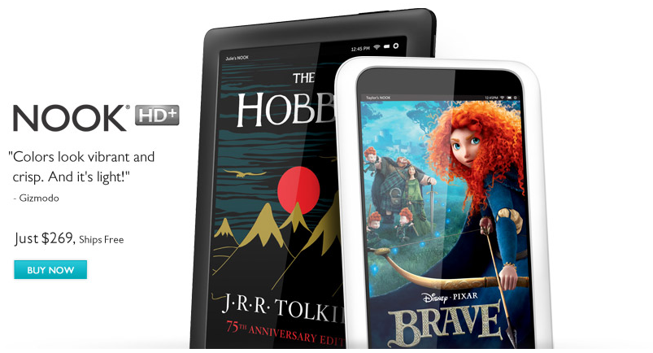

Welcome USERNAME -
Log out
Online Store
Books. Textbooks. eBooks. More
Welcome
Books
Textbooks
eBooks
Teen
Kids

How does it work?
First, you start following users to see their posts. Then, select one of the six categories shown in the menu above. Finally, tweet it out to start sharing, discussing, and learning.
Online Store © 2012